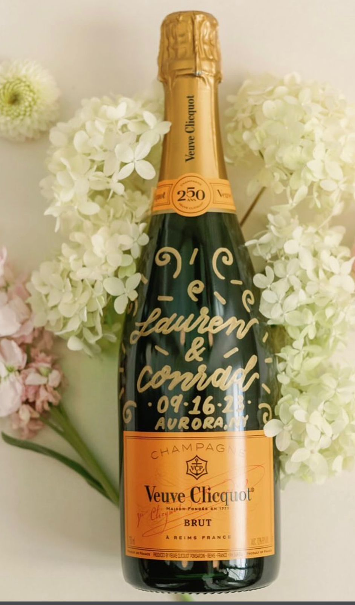
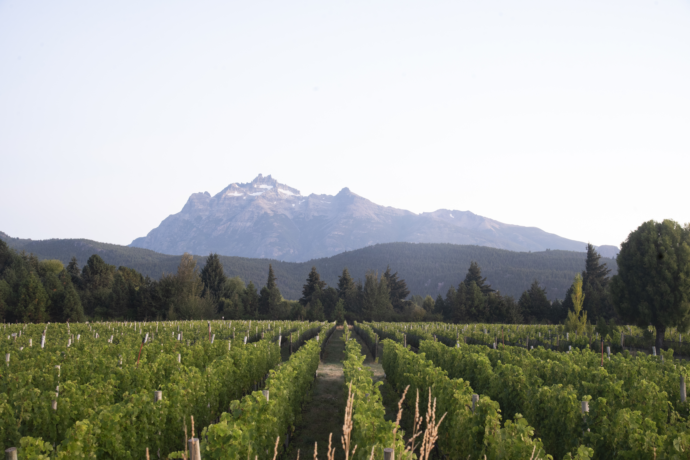
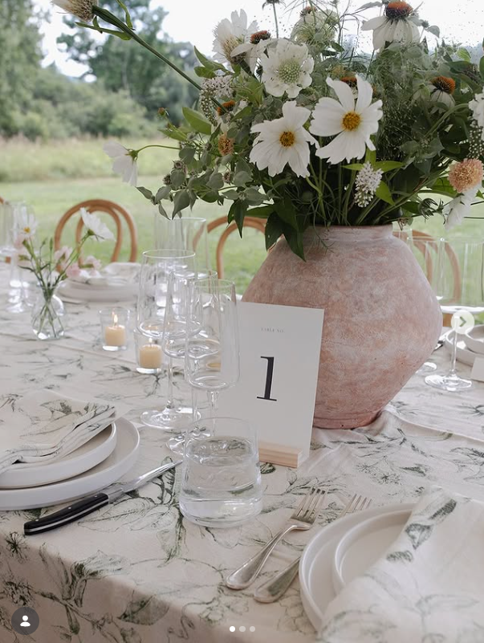
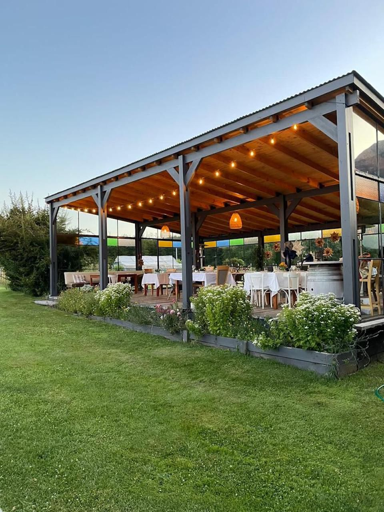
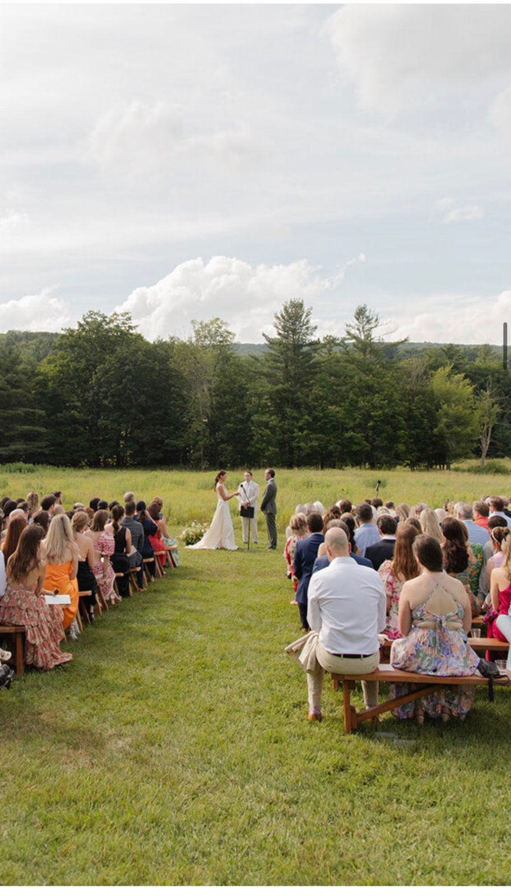
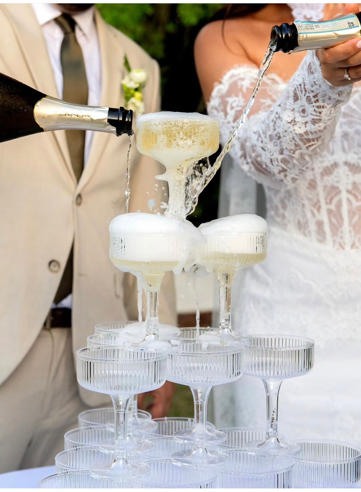

El lugar donde todo cobra sentido
Hay lugares que te reciben y lugares que te abrazan.
Casa Yagüe es un proyecto familiar que nació y creció con la convicción de que cada persona que llega merece sentirse cuidada, bienvenida y parte de algo especial.
Una boda no es un evento. Es una experiencia que se recuerda toda la vida. Y en Casa Yagüe, nos ocupamos de que cada detalle esté pensado para que así sea.
Desde el primer momento en que los invitados lleguen hasta el último brindis de la noche, habrá un equipo detrás de cada detalle, invisible pero presente, para que los novios y sus seres queridos solo tengan que dejarse llevar y vivir este momento especial.
El Escenario










La Experiencia
BIENVENIDA
Desde el primer instante en que los invitados cruzan la entrada de Casa Yagüe, el equipo estará listo para recibirlos y dar inicio a los primeros momentos de la boda.
Cada persona será bienvenida y guiada hacia el jardín exterior, que será el telón de fondo de una recepción pensada para disfrutar desde el primer momento.
Los invitados son recibidos con una copa de bienvenida de nuestro menú de cocteles pensados exclusivamente para la boda.
En una atmosfera distendida vamos a conducir a todos los invitados a sentarse en el sector de la ceremonia.
Mientras los invitados se acomodan, se reencuentran y empiezan a sentir la magia del entorno, dos músicos en vivo —violín y violonchelo, interpretarán versiones de clásicos modernos, creando así una atmosfera relajada, donde la música acompañe estos momentos.
LA CEREMONIA
Un momento que no necesita nada más que ser vivido.
Con la luz del atardecer, llegará el momento más esperado, y que dará lugar en nuestro jardín exterior, frente al viñedo, y donde todos sus seres queridos los acompañaran en el momento en que se miren a los ojos y elijan, una vez más, estar juntos para siempre.
La música en vivo también acompañará este momento: desde la entrada de la novia, con esas primeras notas que detienen el tiempo, hasta el último acorde que cierra la ceremonia.
Piezas elegidas con cuidado, pensadas para que la música sea parte del recuerdo.
LA RECEPCION
Con la ceremonia concluida y el sol terminando de caer sobre los viñedos, los invitados podrán seguir disfrutando del día nuestro jardín mientras se da inicio a la recepción. Un momento de transición natural, donde la emoción de lo vivido se festeja entre diferentes cócteles, y una selección de bocados pensados para compartir.
La música seguirá acompañando el ambiente con la misma calidez con la que empezó la noche. El jardín, ahora bañado por la última luz del día, se convierte en el escenario perfecto para los primeros festejos.
LA CENA
Concluida la ceremonia, los invitados serán invitados a ingresar al Salón de Tasting de Casa Yagüe.
Cada persona encontrará su lugar asignado y será atendida por un equipo de mozos que asistirán tanto las mesas como la barra, garantizando que nada falte en ningún momento.
La cena no es solo el momento de comer: es el espacio donde las conversaciones se alargan, y la noche empieza a tomar su propio ritmo.
El equipo acompañará cada momento de la noche con la atención y el cuidado que merece este momento.
INSTANTES QUE NO SE OLVIDAN
Durante y después de la cena, el DJ se encargará de que la atmósfera de la noche siga viva, con una selección tranquila y envolvente, pensada para que la música sea el fondo perfecto de cada conversación y cada abrazo.
Los novios tendrán tiempo para estar con sus personas más queridas, para esas fotos que no se piden, sino que suceden, para los abrazos largos y las risas.
Y entre todo eso, habrá un regalo que ningún invitado olvidará: un artista trabajará en acuarela, retratando a cada persona presente. Ese retrato será el recuerdo tangible de la noche.
TORTA Y BRINDIS
Toda noche perfecta tiene su momento cúlmine.
En esta boda, ese momento llegará con el corte de la torta y el brindis.
Propuesta Gastronómica
Toda la propuesta gastronómica se acompaña de una selección exclusiva de vinos tintos, blancos y espumantes de Casa Yagüe, además de jugos naturales y aguas infusionadas de nuestra huerta.
"En Casa Yagüe, los novios y sus invitados se irán con algo que va más allá de los recuerdos de una noche: se irán con la certeza de haber estado exactamente donde tenían que estar, rodeados de las personas correctas."
CASA YAGÜE Cada detalle, pensado para vos.